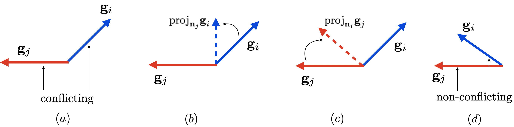

When task gradients fight, cut only the part that interferes. Leave everything else alone.
The volume knobs are balanced. Now the directions: PCGrad operates on conflicting gradients, projecting away the part that fights another task and leaving the rest of each gradient untouched.
On this page
The authors start from the promise of multi-task learning: train one network on many tasks, discover shared structure, and beat learning each task alone on both efficiency and performance. But joint training is a hard optimization problem. It can come out worse than independent training, so badly that several multi-task RL methods quietly retreated to training tasks separately first and distilling afterward, which throws away the efficiency gains the whole thing was for.
And the reasons were not well understood. Other work blamed different learning speeds per task, plateaus in the landscape, or the architecture. The authors propose a different culprit: gradients from different tasks can conflict, meaning they point away from each other, and following their sum can be destructive. They name three conditions that together make the damage severe, a tragic triad: conflicting gradients, high positive curvature in the landscape, and a large gap in gradient magnitudes. Picture a deep valley: the multi-task gradient is dominated by one task, the curvature makes the optimizer misjudge both moves, and the other task pays for it.
Their answer was to stop tuning around the gradients and operate on them directly. They call it gradient surgery: when two gradients conflict, project each onto the normal plane of the other, cutting away only the interfering components. They prove the local conditions under which that beats plain multi-task gradient descent, and they show it working across multi-task supervised learning and multi-task RL.
GradNorm fixes loudness. But loudness was never the only disease. Sometimes the directions themselves fight: two task gradients point partly against each other, and adding them lets the tasks cancel each other out before the step even happens. PCGrad ignores the size of gradients completely and goes straight after the direction problem.
I picture it as two people steering one cart. One pulls north-east, the other pulls north-west, so part of each person's effort is wasted fighting the other. Then they make a deal: "I will drop the part of my pull that works against you, if you drop the part of yours that works against me." What is left still moves the cart forward for both of them. And nobody gave up any part of their pull that was actually helping.
That deal is the whole method. PCGrad stands for projecting conflicting gradients, nicknamed gradient surgery. Its rule fits in one sentence: if two task gradients fight, cut off the part of each one that works against the other, and only then add them up.
A fight is measured by the cosine of the angle \(\phi\) between two task gradients. When \(\cos \phi\) is below zero, the pair is conflicting, and PCGrad cuts the shadow: the part of one gradient that points along (or against) the other.
Every symbol, plainly: \(g_i\) is task \(i\)'s gradient on the shared parameters, and \(g_j\) is task \(j\)'s. The dot product \(g_i \cdot g_j\) measures how much the two agree: negative means they fight. \(\|g_j\|^2\) is the squared length of \(g_j\), which turns the fraction into the projection coefficient. The whole subtracted piece, \(\frac{g_i \cdot g_j}{\|g_j\|^2} g_j\), is exactly the part of \(g_i\) that points along \(g_j\)'s line. When the cosine is negative, that piece points against \(g_j\): it is the offending part. Everything that agrees, or points sideways, is left alone. Then the same cut is done on \(g_j\). Pairs that are not fighting are never touched, so cooperation costs nothing.
Let me run one full surgery with numbers, the worked example the tool below animates. \(g_1 = (3, 1)\), \(g_2 = (-1, 2)\).
The same surgery on the other side gives \(g_2 = (-0.7, 2.1)\), perpendicular to \(g_1\). The update changes from (2, 3) to (2.1, 3.5): nearly the same step, but now guaranteed to contain nothing that fights either task. The scores confirm it: \(\langle d, g_1 \rangle = 9.8\) and \(\langle d, g_2 \rangle = 4.9\), both positive. Drag two arrows into a fight in the intro's arrow playground and watch the agreement score flip.
The paper draws the surgery as a sequence: the check, the shadows, the cut, and the final add. Step through the four beats with the exact vectors from the worked example above. Nothing moves until you click a beat.
The surgery is three choices, and each one has a reason.
The full procedure, per training step:
import numpy as np
def pcgrad_combine(grads):
# grads: list of per-task gradient vectors on the shared parameters
g = [x.copy() for x in grads]
for i in range(len(g)):
for j in np.random.permutation(len(g)): # random order, fairness
if i != j and g[i] @ g[j] < 0: # conflict detected
g[i] -= (g[i] @ g[j]) / (g[j] @ g[j]) * g[j] # cut the shadow
return sum(g)Conflict alone is not fatal. It only turns destructive when three things come together:
The theory ties it together: PCGrad is proven to lower the multitask loss more than plain gradient descent when the fight is strong compared to the loudness gap (\(\cos \phi \le -\Phi\)), the landscape is curved enough, and the step size is big enough. In other words, when the triad shows up. On simple convex two-task problems, PCGrad is proven to reach the best point or a point of perfect standoff. And the gains are real: over 30% absolute improvement on multi-task robot-learning benchmarks.
Let me check the triad against the worked example above, one computation per line:
Task 1 is loud, \(g_1 = (3, 1)\); task 2 is quiet, \(g_2 = (-1.5, 0.5)\); they conflict (\(\langle g_1, g_2 \rangle = -4\)). The sum \((1.5, 1.5)\) raises task 2's loss, since \(\langle g_1 + g_2, g_2 \rangle = -1.5 < 0\): the loud task simply outvotes the quiet one. After surgery, \(g_1' = (0.6, 1.8)\) and \(g_2' = (-0.3, 0.9)\), and the combined step \((0.3, 2.7)\) helps both: \(\langle d, g_1 \rangle = 3.6\) and \(\langle d, g_2 \rangle = 0.9\), both positive. Build the same loud-vs-quiet standoff with the draggable arrows in the intro's math kit and watch the verdict flip.
This is the paper's own illustration of the surgery, not a redraw. Panel (a) is the conflict; (b) and (c) are the two cuts; (d) is a non-conflicting pair, left alone.

Rebuilt from Figure 2 of Yu, T., Kumar, S., Gupta, A., Levine, S., Hausman, K., Finn, C., "Gradient Surgery for Multi-Task Learning," NeurIPS 2020. (arXiv:2001.06782)
Original caption: "Conflicting gradients and PCGrad. In (a), tasks i and j have conflicting gradient directions, which can lead to destructive interference. In (b) and (c), we illustrate the PCGrad algorithm in the case where gradients are conflicting. PCGrad projects task i's gradient onto the normal vector of task j's gradient, and vice versa. Non-conflicting task gradients (d) are not altered under PCGrad, allowing for constructive interaction." Figure extracted from the arXiv e-print source and shown with its original caption.
Surgery always cuts to zero: every conflicting pair is projected until nothing fights. But is zero the right target for every pair of tasks? That is the next page's question.